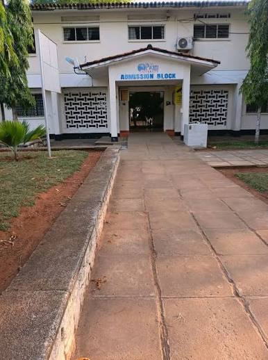
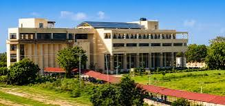
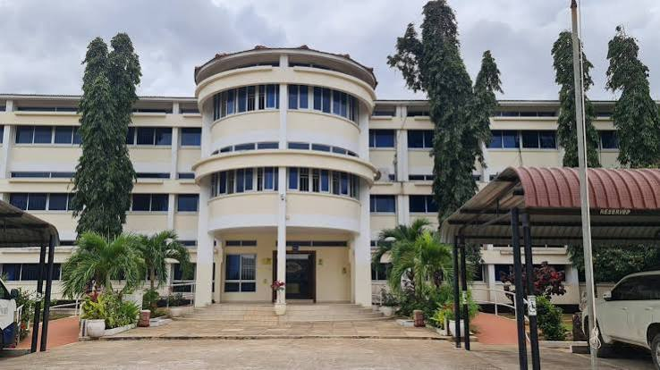
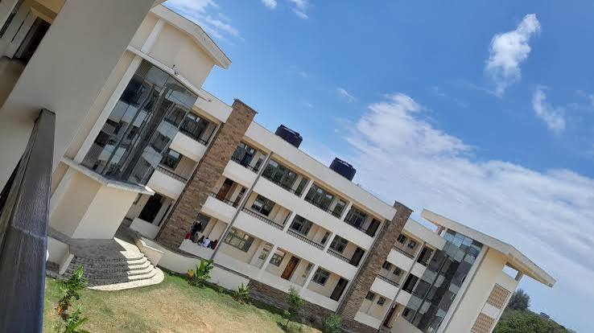
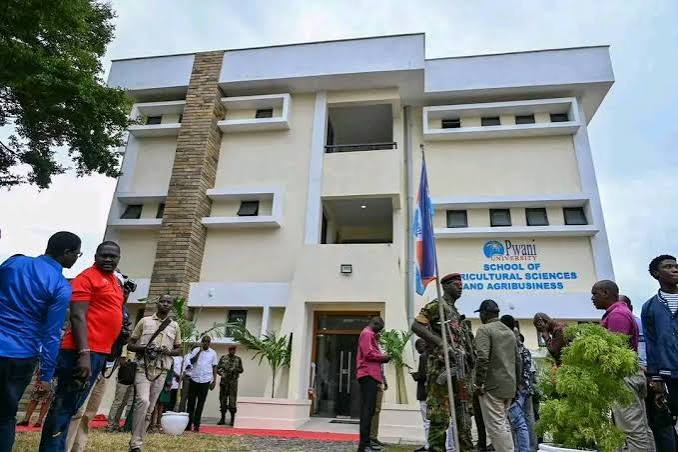
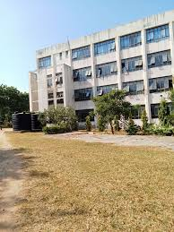

Freshers info
Everything new students need: where to go, who to ask, and where to get help.
Getting Around

Admissions Office
Room 1, Old Administration Block
Collect your admission letter and register with your faculty here.

Library
location
Lecture Halls & Labs
Use the Rooms page to check which classrooms are free right now.
Student Support Services
Counselling Services
Available to students on a 24-hour basis .Headed by the Directorate of Counselling and Wellness Services
• Phone: +254 721 839327 (Peer Counselors / Counselling desk) or general line +254 41 7525100
• Email: counselling pu.ac.ke or info@pu.ac.ke
Health Clinic
An operational Level 2 dispensary on-campus facility in Kilifi for outpatient consultations on common ailments.
Complicated cases are referred to Kilifi County Referral Hospital. Students are advised to register with SHA or hold personal medical insurance.
• Hours: Monday to Friday from 6:00 AM to 8:00 PM; closed on Saturdays and Sundays.
Fees & Financial Aid
HELB and scholarships: apply via the HEF Portal.
Stuck? Call 0794 953 769. Internal bursaries are also available for needy students.
ICT Helpdesk
Password resets and portal issues: helpdesk.pu.ac.ke
Academic Support
Admissions Office
Room 1, Old Administration Block
info@pu.ac.ke

School of Business and Economics
Dean: Dr. Samuel Mwachiro Mwawasi
School of Health and Human Sciences
Dean: Dr. Mwanaidi Uhavi Ayumba

School of Pure and Applied Sciences
Office found in new adm block
Dean: Prof. Bernerd Mulwa Fulanda

School of Humanities and Social Sciences
Dean's name :Prof. Francis Wakobi.

School of Agricultural Sciences and Agribusiness
Dean's name:Prof. Mkuzi Saha.

School of Environmental and Earth Sciences
• Leadership: Headed by Dean Prof. Annie Hilda Ong'ayo.
Contains SBN and SBS classes
Campus Life
Hostels & Accommodation
Booked online through the university website. First-come, first-served, so book early.
Male hostels: KSh 12,000/year (2 occupants) or KSh 11,000/year (4 occupants).
Female hostels: KSh 11,000/year (4 occupants).
Pwani University Students Association (PUSA)
The official student body. Holds elections every year to elect leaders who represent students on various issues.
Clubs & Societies
Sports, performing arts, and various clubs are open for students to join and grow their talents.
See the Announcements page for upcoming meetings and events.